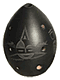
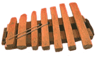

Xiao:  Китайская односторонняя бамбуковая флейта. Звук инструмента низкий и очень долгий.Xun: Китайская окарина. Изготавливается из обожженной глины или камня, на корпусе 9-10 отверстий. Xylophone: Пластиночный ударный музыкальный инструмент.  В инструменте от 1 до 22 деревянных планок-ключей, установленных в деревянной раме-резонаторе. Настроен на пентатоническую гамму и обладает ярким, чистым звуком.Ксилофоны широко распространены в восточной, центральной и западной Африке. Могут использоваться как соло, так и в ансамбле. Большие ансамбли, включающие до 30 инструментов, особенно распространены в Мозамбике, который славится своей искусной ксилофонной музыкой. |